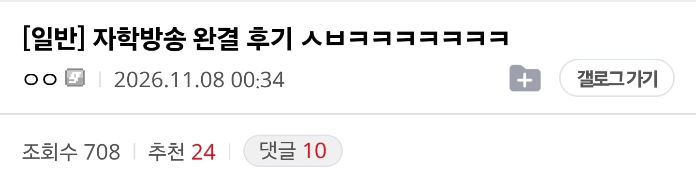
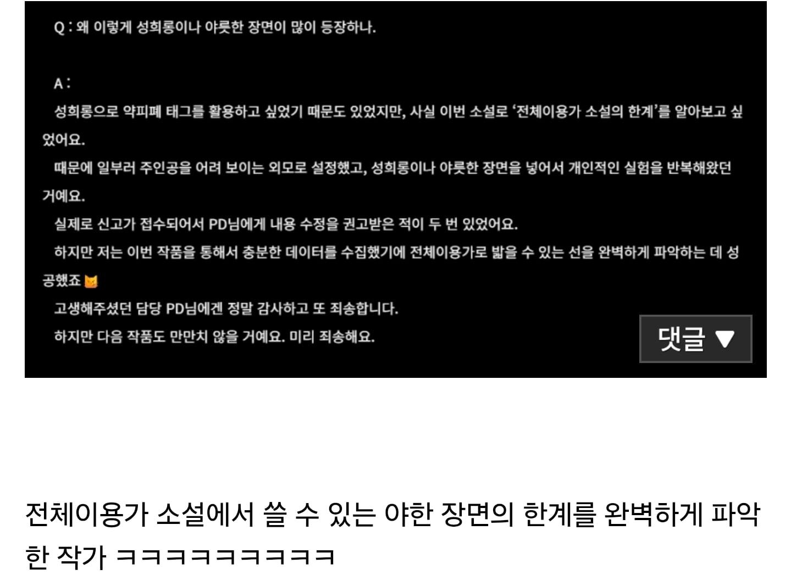

57 · 7 · 5 시간 전 · 원문


수위 줄타기 분석완료 ㅋㅋㅋㅋ
수집 당시 댓글 7개
군밤의왕 · 15 시간 전
왜 ai문체가 느껴지냐
↳ 답글 · 개선죽문 · 8 시간 전
도저히 공개적으로 담을 수 없는 말을 쏟아내고 ai한테 수정해달라고 했을듯
광어튀김 · 14 시간 전
제목
↳ 답글 · 예술의경계 · 6 시간 전
자학방송아니에요 래
↳ 답글 · 냥그 · 6 시간 전
범상치 않은 소설 완결 후기
카미트리아 · 6 시간 전
선이 있다고 믿으면 당하는데...
보후퇴 · 6 시간 전
저 선은 야구심판의 스트존과 같아서 매번 변할건디....
왜 ai문체가 느껴지냐